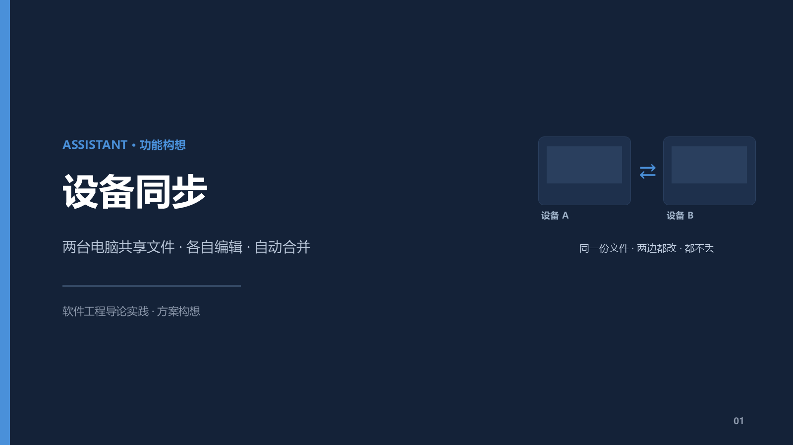
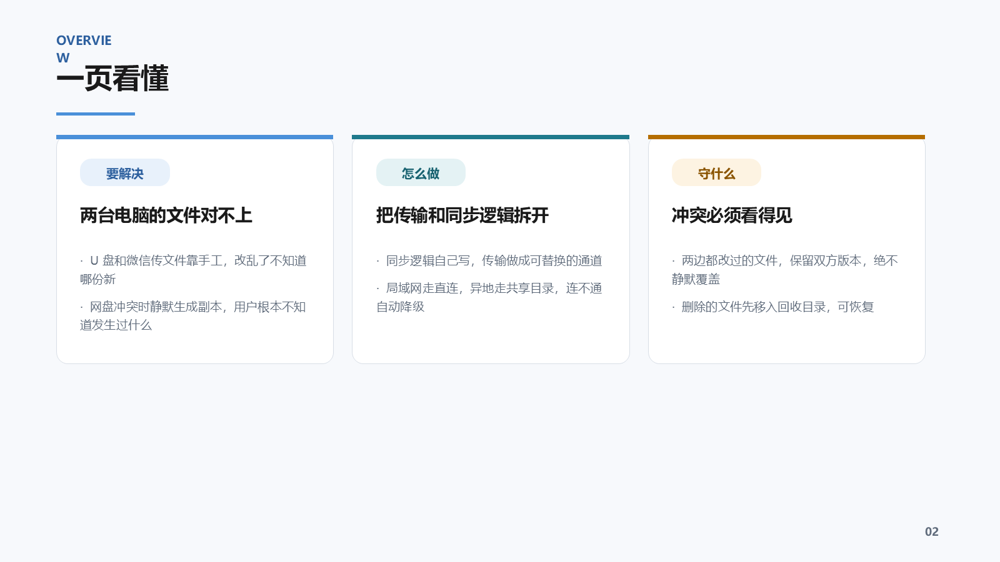
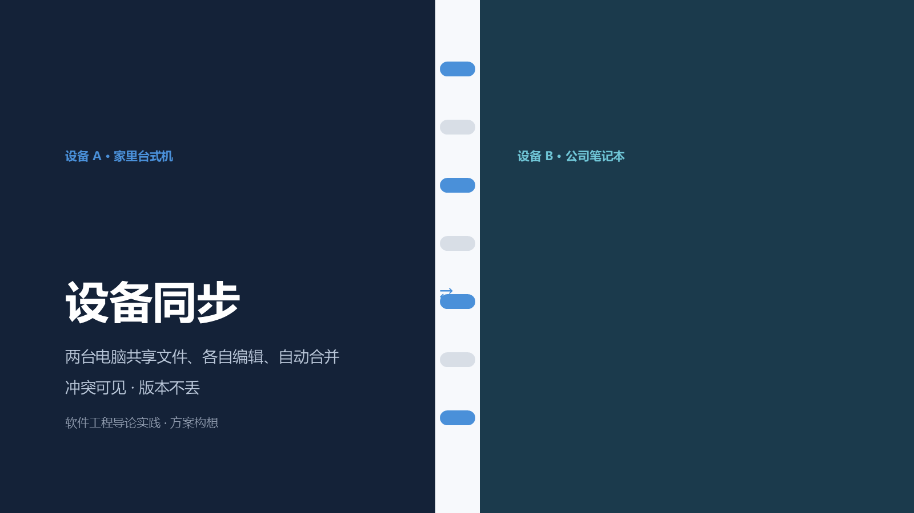
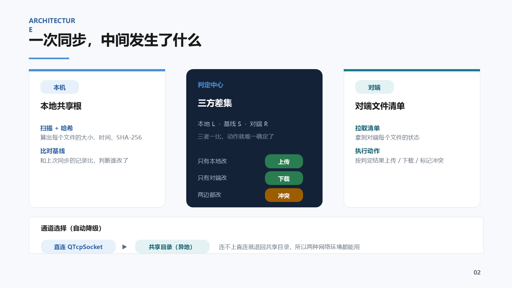
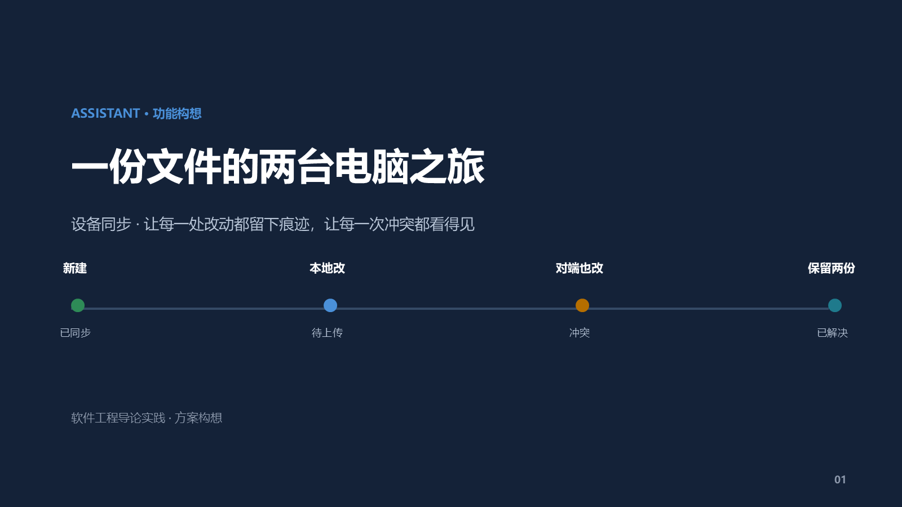
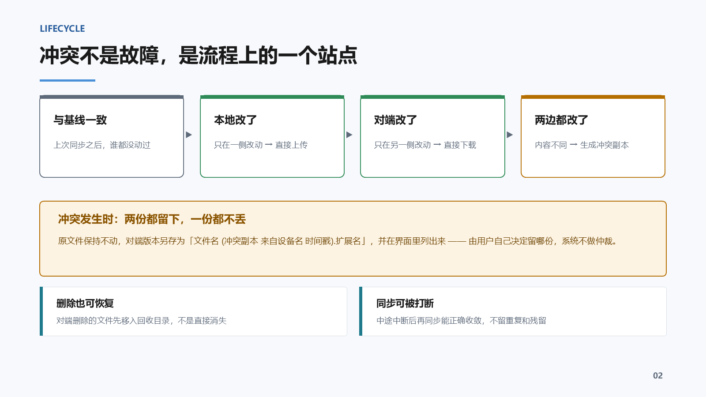

#142238 / 强调蓝 #4A90D9），差异在
视觉母题——也就是"用什么画面结构讲这件事"。





docs/slides/，可复跑）：check_deck_geometry.py — 越界 / 文字溢出 / 大块重叠：三版全部 OKcheck_deck_contrast.py — 文字对比度全部达到 WCAG AA（4.5:1）：三版全部 OKmake_deck_sync_drafts.py 用 python-pptx 生成
（沿用你既有三套脚本的技术栈与配色），这两个自检脚本是因为当前会话的模型看不到渲染图、
只能靠几何与对比度计算来把关才写的。视觉观感（留白、平衡、气质）仍需你亲自判断。